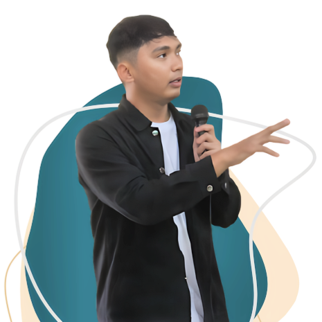

Hi, I'm Khanifudin.
Data Scientist - Machine Learning Engineer - Power BI Developer
Experienced in data science, machine learning engineering, and building power bi dashboard of expertise in end-to-end project execution. Skilled in developing models, optimizing data workflows, and creating insightful visualizations. Proficient in handling diverse data types and applying advanced techniques to generate actionable insights and drive business results.